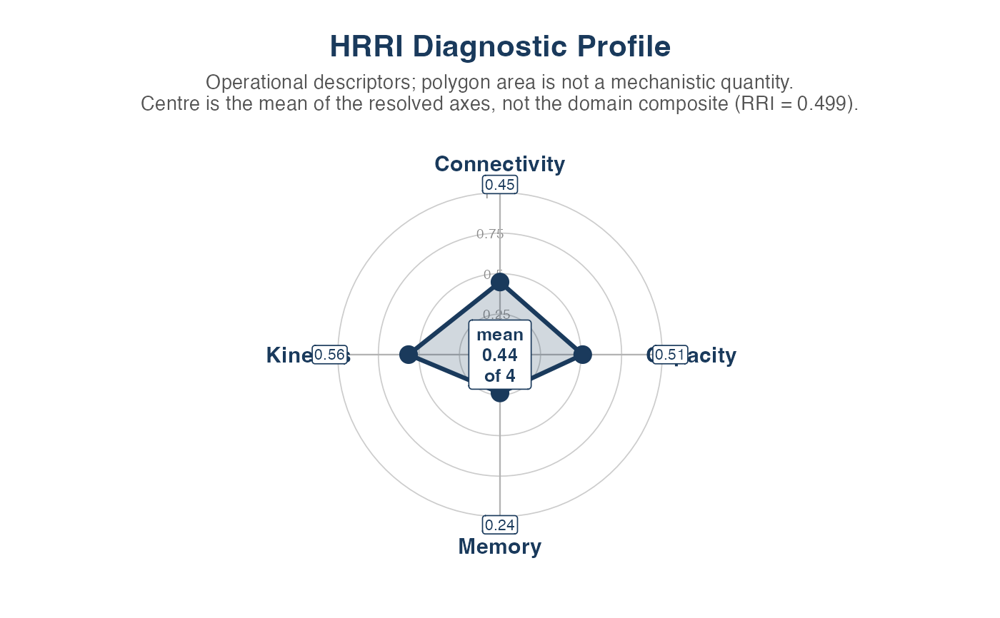

Displays available diagnostic summaries labelled Capacity, Connectivity,
Kinetics and Memory alongside the composite RRI score. These axes are
operational descriptors returned by rri_property_scores;
they are not direct measurements or identified estimates of the theoretical
mechanisms bearing the same names.
Usage
plot_rri_properties(
props,
rri_value = NULL,
group_list = NULL,
fill_alpha = 0.2,
colours = c("#1A3A5C", "#E07B39", "#2E7D32", "#7B3294", "#B2182B"),
show_values = TRUE,
title = "HRRI Diagnostic Profile",
base_size = 13
)Arguments
- props
A list returned by
rri_property_scores, or a named numeric vector with elementsCapacity,Connectivity,Kinetics,Memory(values in[0, 1]).- rri_value
Optional numeric. Composite RRI to display in the chart centre annotation. Defaults to
props$rri_summaryif available.- group_list
Optional named list of property score vectors, one per group (e.g., per thaw stage or treatment). If supplied, multiple overlapping polygons are drawn, one per group.
- fill_alpha
Numeric in
[0, 1]. Polygon fill transparency.- colours
Character vector of polygon outline/fill colours, recycled across groups.
- show_values
Logical. Annotate each axis tip with the numeric score.
- title
Character. Plot title.
- base_size
Numeric. Base font size.
Details
The chart uses Cartesian coordinates constructed with ggplot2; no
external radar-chart package is required. Each available axis runs from 0
(centre) to 1 (rim). Polygon area has no quantitative meaning, and axes based
on different transformations are not necessarily commensurable.
Axis meanings:
Capacity — oxidative-oriented soil feature composite; not accessible capacity unless the caller calculates and supplies it explicitly.
Connectivity — association or network-topology descriptor; not demonstrated electron transfer.
Kinetics — cohort- or timescale-relative recovery-speed descriptor; not a mineral exchange rate.
Memory — loop-area and persistent-displacement descriptor; not an identified causal memory state.
RRI — composite score under the declared scaling and weights.
Examples
sim <- simulate_redox_holobiont(
n_plot = 3, n_depth = 2, n_plant = 3, n_time = 14,
p_micro = 30, seed = 99
)
res <- rri_pipeline_st(
ROS_flux = sim$ROS_flux,
Eh_stability = sim$Eh_stability,
micro_data = sim$micro_data,
id = sim$id,
reducer = "per_domain",
scaling = "pnorm"
)
#> Warning: Unanchored latent axes have arbitrary signs; RRI is exploratory, not directionally validated resilience.
#> Warning: Excluding simulator-derived hidden columns from scoring: Cacc_EAC, Cacc_EDC, Cacc_total, Cacc_fraction, net_oxidative_balance, alpha_accept, alpha_donate, k_accept_h, k_donate_h
rec <- rri_recovery_metrics(
res = res,
id = sim$id,
time_col = "time",
group_cols = c("plot", "depth", "plant_id"),
perturb_start = 5,
perturb_end = 8
)
props <- rri_property_scores(
res = res,
rec = rec,
soil_df = sim$Eh_stability,
eac_col = "EAC",
edc_col = "EDC",
humic_col = "dissolved_organic_matter_redox"
)
plot_rri_properties(props)
#> Warning: Ignoring unknown parameters: `label.size`
